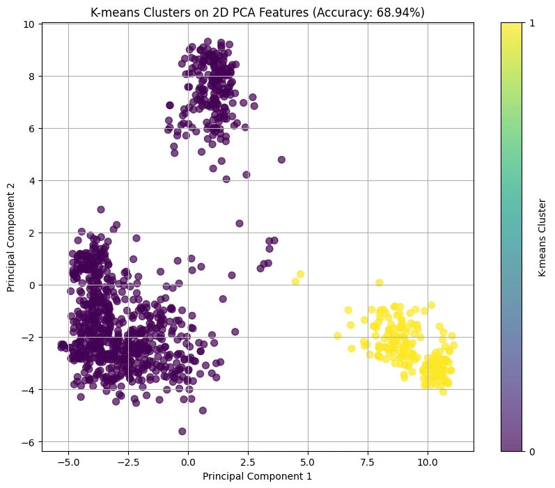

Comparing Different Machine Learning Algorithms
01. ALGORITHMS
KNN (K-nearest neighbors)
Within the world of image classification, there are numerous AI algorithms being used to differentiate objects in digital images and classify them. Tools like PCA, CLIP, and K-means are very popular, all being used in our project today: comparing left and right facing car images to see if different AI algorithms can successfully differentiate between them.
Decision Tree
Overall, we are going to compare the results of K-means clustering when applied to different sets of features. We will use K-means directly on the CLIP features and K-means on the PCA features using the optimal k (10). We will also use K-means on the first 2 principal components to test how much information is lost by reduction.
Logisitic Regression
Overall, we are going to compare the results of K-means clustering when applied to different sets of features. We will use K-means directly on the CLIP features and K-means on the PCA features using the optimal k (10). We will also use K-means on the first 2 principal components to test how much information is lost by reduction.
Random Forest
Overall, we are going to compare the results of K-means clustering when applied to different sets of features. We will use K-means directly on the CLIP features and K-means on the PCA features using the optimal k (10). We will also use K-means on the first 2 principal components to test how much information is lost by reduction.

02. EXPERIMENT
Dataset
We downloaded the resized DVM file, which has 84 different folders of different car brands (sorted by year and color) with images of the cars facing different angles. Using a random number generator, we chose 4 of them: Ferrari, Lotus, McLaren, and Rolls-Royce. This file also had an image table with image IDs, the predicted angle of the car in the image, and many more.
Code
From the CLIP_THINGS code, we ran the first 3 sections of code to use CLIP embeddings. After downloading the image_table.csv file, we cleaned the file to use the selected 4 brands and the left & right facing cars. The image table file had a unique image name for each image, so we had to make sure that each part of the image name was used when calling the images.
After cleaning the dataset, we used feature extraction to convert all our car images into a format that PCA and K-means can understand. Since we are using K-means for our project, we also found the ground-truth labels for this algorithm and used PCA for 10 components and 2 components.
03. DISCUSSION
Project Results: Accuracy Comparison
- Accuracy (K-means on Full CLIP, D=1024): 68.94%
- Accuracy (K-means on PCA Features, D=10): 68.94%
- 3. Accuracy (K-means on PCA Features, D=2): 68.94%
All of the accuracies are the same, meaning that a car's left or right direction is prominent to the model. Theoretically, this means that the left/right classes are captured almost entirely by the very first few principal components. However, all 3 of the algorithms having the same accuracy could also be a sign that our model didn’t work as well as we thought.

K-means Clusters on 2D PCA Features
We noticed that the yellow and purple clusters represent the 2 different directions our dataset of car images were facing. Since the clusters are very separate, this shows that the left/right direction is very strong in the CLIP features. The accuracy of 68.94% is very high, but the scatter plot with 2 different purple clusters shows where the 31.06% of errors occurred.